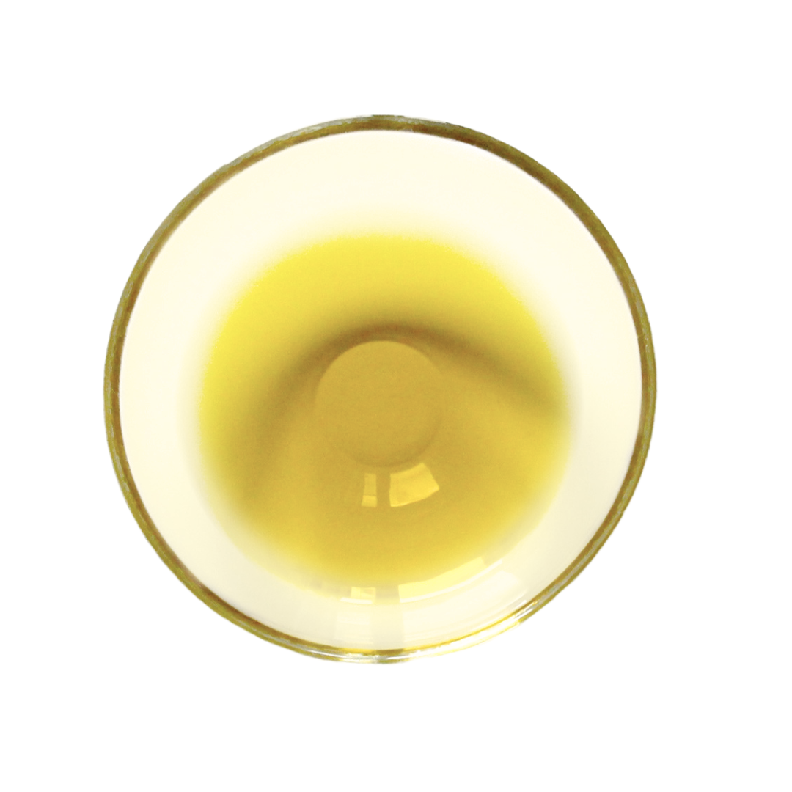
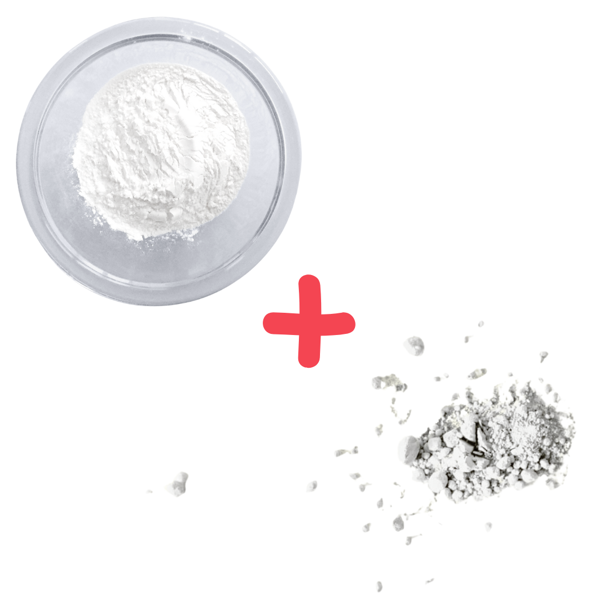
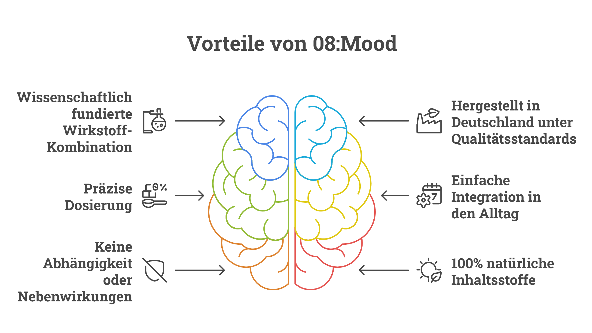

Diese erschütternden Erkenntnisse aktueller Arbeitsmedizin-Studien sorgen für Aufsehen: Die Burnout-Rate bei berufstätigen Müttern hat sich in den letzten 5 Jahren verdreifacht. Während Ärzte weiterhin zu klassischen Entspannungsmethoden raten, zeigt die neueste Forschung im Bereich der Neurobiologie jetzt die wahre Ursache – und eine überraschend effektive Lösung, die nur 2 Minuten täglich benötigt.
Geschrieben von Maria Weber am 29.01.2025
Senior Editor | Gesundheits-Expertin
Die alarmierenden Forschungsergebnisse
Eine Reihe neuer Erkenntnisse stellt das bisherige Verständnis von chronischer Erschöpfung bei berufstätigen Müttern grundlegend in Frage.
"Was wir heute bei gestressten Müttern beobachten, geht weit über normale Erschöpfung hinaus", warnen Experten.
Der ständige Spagat zwischen Beruf und Familie löst eine biochemische Kettenreaktion im Körper aus, die mit traditionellen Entspannungsmethoden kaum noch zu durchbrechen ist.
Unsere Recherchen bestätigen: Der Handlungsbedarf ist akut...
"Es ist ein Teufelskreis aus Erschöpfung und Überforderung - und die üblichen Empfehlungen verschlimmern die Situation oft noch" ...berichten Arbeitsmediziner und Therapeuten aus ihrer täglichen Praxis.
Der versteckte Mechanismus hinter der Erschöpfung moderner Mütter
Was die Wissenschaft jetzt über die wahre Ursache chronischer Erschöpfung bei Müttern herausgefunden hat, ist bemerkenswert: Es ist nicht einfach nur "zu viel Stress" - es ist eine fundamentale Störung des körpereigenen Energiehaushalts.
"Die permanente mentale Belastung durch Multitasking zwischen Job und Familie führt zu einer regelrechten biochemischen Entgleisung", erklären Stressforscher.
Der Körper kommt in einen Zustand, in dem er lebenswichtige Botenstoffe nicht mehr richtig produzieren und verarbeiten kann.
Die Folgen dieser Entwicklung sind verheerend:
- Der natürliche Tag-Nacht-Rhythmus wird gestört
- Regenerationsphasen werden immer kürzer
- Die körpereigene Energieproduktion sinkt drastisch
- Stresshormone bleiben dauerhaft erhöht
- Die mentale Belastbarkeit nimmt kontinuierlich ab
Warum klassische Empfehlungen oft scheitern
„Mehr Sport, besseres Zeitmanagement, Meditation – diese gutgemeinten Ratschläge können kontraproduktiv sein", warnen Experten. Der Grund: Sie belasten den ohnehin überforderten Organismus zusätzlich.
Julia M. (38), Projektmanagerin und zweifache Mutter, bestätigt:
„Ich hatte das Gefühl, zu versagen. Meditation, Yoga, Sport – nichts hat wirklich geholfen. Im Gegenteil: Jede zusätzliche 'Anti-Stress-Aktivität' war nur ein weiterer Punkt auf meiner endlosen To-Do-Liste."
Die überraschende Entdeckung: Eine 2-Minuten-Routine verändert alles
Doch jetzt gibt es Hoffnung: Wissenschaftler haben einen natürlichen Weg gefunden, die biochemische Entgleisung von innen heraus zu korrigieren. Der Schlüssel liegt in einer präzisen Kombination von Mikronährstoffen, die direkt in den gestörten Energiestoffwechsel eingreifen – und das Beste: Die Anwendung dauert nur 2 Minuten täglich.
Der Durchbruch: Diese Nährstoff-Kombination bringt den Energiehaushalt wieder ins Gleichgewicht
Die wissenschaftliche Erkenntnis ist dabei so einfach wie genial: Bestimmte Mikronährstoffe können die gestörte Biochemie des Körpers wieder normalisieren. "Entscheidend ist dabei nicht ein einzelner Wirkstoff, sondern das präzise Zusammenspiel mehrerer Komponenten", erklären Forscher.
Die wichtigsten Bausteine dieser revolutionären 2-Minuten-Routine:




- L-Tryptophan: Diese essenzielle Aminosäure ist der Grundbaustein für wichtige Neurotransmitter. "Sie ist quasi der Schlüssel, der die Tür zu mehr innerer Ruhe wieder aufschließt", so die Experten.
- Rosenwurz: Ein traditionelles Adaptogen, das nachweislich die Stressresistenz erhöht. Neue Studien zeigen: Es hilft dem Körper, sich auch in Belastungssituationen zu regenerieren.
- Coenzym Q10: "Der Energielieferant schlechthin", erklären Wissenschaftler. "Es ist entscheidend für die Energieproduktion in jeder einzelnen Zelle."
- Die "Entspannungs-Mineralien" Magnesium und Zink in ihrer bioaktiven Form unterstützen die nächtliche Regeneration und helfen dem Nervensystem, sich zu erholen.
Das Besondere: Diese Kombination wird durch einen speziellen "Bio-Verstärker" (schwarze Pfefferfrucht) ergänzt, der die Aufnahme aller Wirkstoffe deutlich verbessert.
Die Resultate der 2-Minuten-Routine sprechen für sich:
Die Ergebnisse dieser Entdeckung sind beeindruckend. In Anwendungsbeobachtungen berichten Teilnehmerinnen von erstaunlichen Verbesserungen:
"Ich dachte erst, es wäre zu einfach, um wahr zu sein"
Sabine K. (41), Teamleiterin und Mutter von drei Kindern, war anfangs skeptisch:
„Jahrelang habe ich alles Mögliche probiert - Yoga, Meditation, teure Entspannungskurse. Nichts davon ließ sich wirklich in meinen vollen Alltag integrieren. Als ich von dieser 2-Minuten-Nährstoff-Routine hörte, war ich ehrlich gesagt skeptisch. Aber die wissenschaftlichen Hintergründe haben mich überzeugt."
Ihr Erfahrungsbericht nach 8 Wochen ist beeindruckend:
"Der Unterschied ist wie Tag und Nacht. Morgens wache ich tatsächlich erholt auf. Im Job bleibe ich auch in stressigen Meetings gelassen. Und das Beste: Abends habe ich endlich wieder Energie für meine Familie, anstatt völlig erschöpft auf dem Sofa zu kollabieren."
Die revolutionäre 2-Minuten-Formel, die dies möglich macht
Diese bahnbrechende Entdeckung ist jetzt unter dem Namen 08:Mood erhältlich - eine präzise abgestimmte Formulierung, die speziell für die Bedürfnisse gestresster Mütter entwickelt wurde und in nur 2 Minuten täglich angewendet werden kann.
Was 08:Mood von anderen Produkten unterscheidet:

Die 5 entscheidenden Qualitätskriterien für ein wirksames Anti-Stress-Supplement
- Bioaktive Formulierung: "Die reine Anwesenheit von Wirkstoffen reicht nicht", erklären Experten. "Entscheidend ist ihre Bioverfügbarkeit - also wie gut der Körper sie tatsächlich aufnehmen kann." 08:Mood verwendet ausschließlich hochverfügbare Formen seiner Wirkstoffe.
- Synergistische Wirkung: Während viele Produkte nur einzelne Inhaltsstoffe enthalten, setzt 08:Mood auf das wissenschaftlich bestätigte Zusammenspiel mehrerer Komponenten. "Erst die präzise Abstimmung aller Inhaltsstoffe ermöglicht die volle Wirkung", so Forscher.
- Deutsche Produktion: Im Gegensatz zu vielen Nahrungsergänzungsmitteln aus Überseemärkten wird 08:Mood unter streng kontrollierten Bedingungen in Deutschland hergestellt. Regelmäßige Laborkontrollen garantieren höchste Qualität und Reinheit.
- Optimale Dosierung: "Die richtige Menge macht den Unterschied", betonen Wissenschaftler. Jede Kapsel enthält die exakt erforderliche Menge der Wirkstoffe - nicht zu wenig, aber auch nicht zu viel.
- Natürliche Verstärkung: Der Zusatz von schwarzer Pfefferfrucht erhöht die Bioverfügbarkeit aller Inhaltsstoffe nachweislich um bis zu 200%.
Beeindruckende Ergebnisse in der Praxis:
Nicole R., alleinerziehende Mutter, berichtet:
„Nach drei Wochen mit der 08:Mood 2-Minuten-Routine merkte ich den Unterschied deutlich. Meine Kollegin fragte sogar, ob ich im Urlaub war, weil ich so erholt aussehe!"
Exklusives Angebot: Jetzt 08:Mood risikofrei testen
Das Beste: Sie können sich jetzt selbst von der Wirkung überzeugen. Für kurze Zeit bietet mindsupply 08:Mood mit besonderen Vorteilen an:
Balance & Entspannung – Das Kennenlern-Angebot:
- 6x 08:Mood (regulär 203,40€)
- GRATIS: Wissenschaftlich fundiertes Stress-Journal (Wert 22,90€)
- GRATIS: Anti-Stress E-Book mit umsetzbaren Strategien (Wert 14,90€)
- GRATIS: Gratis Zugang zur Spotify Mood Playlist (Wert 3,89€)
- GRATIS: Premium-Versand (Wert 4,90€)
Sie sparen 110,99€! Jetzt nur: 139,00€ (statt 249,99€)
Die absolute Zufriedenheits-Garantie
mindsupply ist von der Wirksamkeit von 08:Mood überzeugt und gibt satte 100 Tage Zeit, sich selbst davon zu überzeugen. Sind Sie nicht zu 100% zufrieden mit Ihrer 2-Minuten-Routine, erhalten Sie Ihr Geld - ohne Wenn und Aber - zurück.
Fazit: Eine wissenschaftlich fundierte 2-Minuten-Lösung für gestresste Mütter
Die Fakten sprechen für sich: 08:Mood bietet einen revolutionären Ansatz für Mütter, die unter chronischem Stress und Erschöpfung leiden. Anders als herkömmliche Entspannungsmethoden setzt die innovative 2-Minuten-Routine direkt an der Wurzel an.
Zusammengefasst erhalten Sie
- Eine innovative Formulierung mit 8 synergistisch wirkenden Inhaltsstoffen
- Herstellung in Deutschland unter höchsten Qualitätsstandards
- Eine einfache 2-Minuten-Routine für den Alltag
- Spürbar mehr Energie und bessere Stressresistenz
- 100% natürliche Inhaltsstoffe ohne Nebenwirkungen
- 100 Tage Geld-zurück-Garantie
- Schnellen Gratis-Versand
Zusätzliche Zahlungsoptionen verfügbar: ✓ PayPal ✓ Kreditkarte ✓ Rechnung ✓ Sofortüberweisung
Wichtiger Hinweis: Aufgrund der hohen Nachfrage ist die Verfügbarkeit dieses Angebots nur für kurze Zeit garantiert. Sichern Sie sich jetzt Ihre tägliche 2-Minuten-Routine, solange der Vorrat reicht!